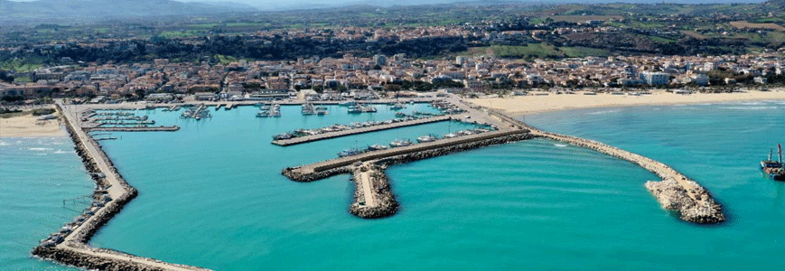

About the city...
Giulianova, in the province of Teramo, has roots dating back to Roman times. It is divided into Giulianova Alta, the hilly historic center, and Giulianova Lido, the seaside area that developed in the 20th century, mainly due to its fishing port. The town's fishing tradition remains a fundamental part of its identity, with daily activities at the port, where fish are unloaded for sale and export. This bustling port continues to be the heart of Giulianova's economy and culture.
The fishing industry in Giulianova is a long-standing tradition, with the catch being shipped to various regions. The centrally located port offers a daily spectacle of arrivals, departures and movement of goods. Seagulls soar overhead, searching for food, while the sounds of the harbor echo with stories of the sea, stories of the past that remain alive in the present.
The port's central location and constant activity make it a symbolic landmark for the city. It links Giulianova's ancient past with its modern seafaring culture, reflecting both the continuity of its traditions and the evolving role of the sea in shaping the city's identity.